Sebelum / sesudah · v3 → v4
v3


v4
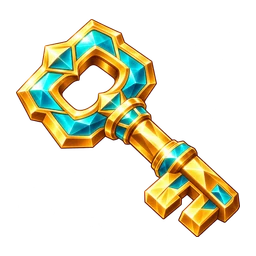
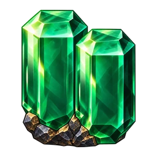
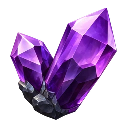
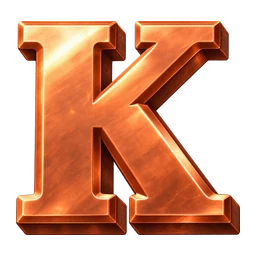
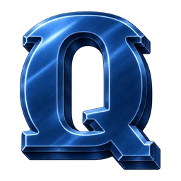
Empat simbol material tambang dan tiga huruf logam. Scatter berbentuk kunci emas–toska, H3 memakai dua prisma lebar, dan Q baja biru gelap. Penanda tingkat multiplier digambar saat runtime agar terbaca pada ukuran board.





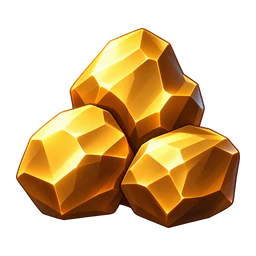
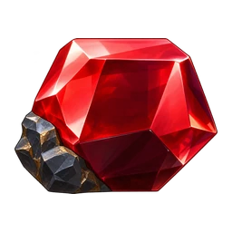
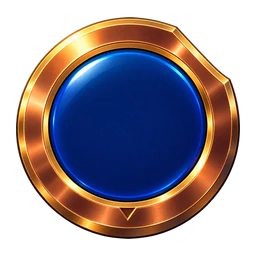
2×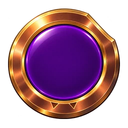
5×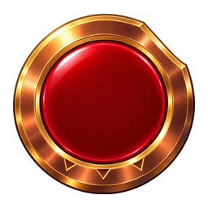
10×Panel diekspor selebar 2048 px, background 2560 × 1440 px. Delapan panel dan kedua background masih diperbesar dari sumber v3; dimensi ekspor tidak berarti detail native baru. Dimensi sumber dan penanda upscaled dicatat di manifest.
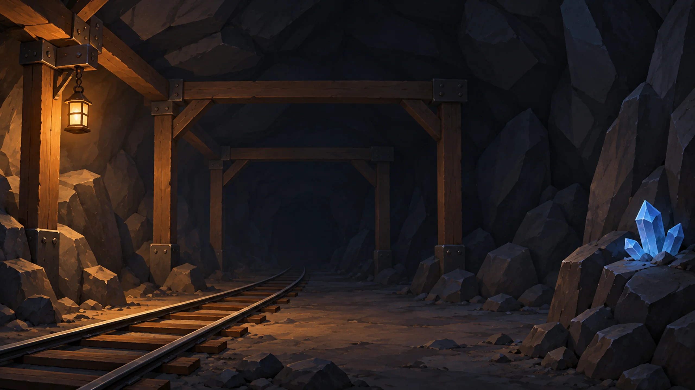
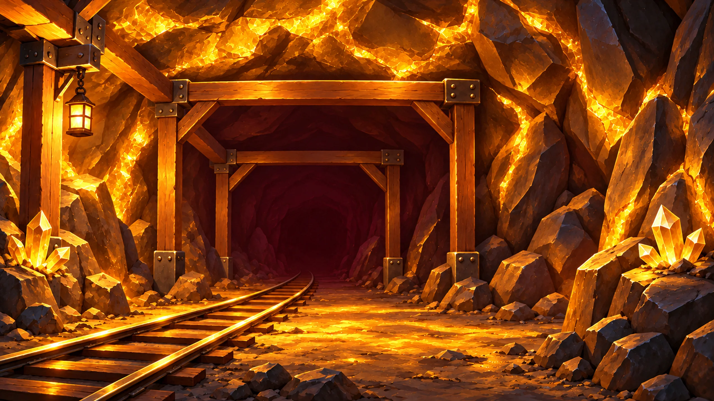
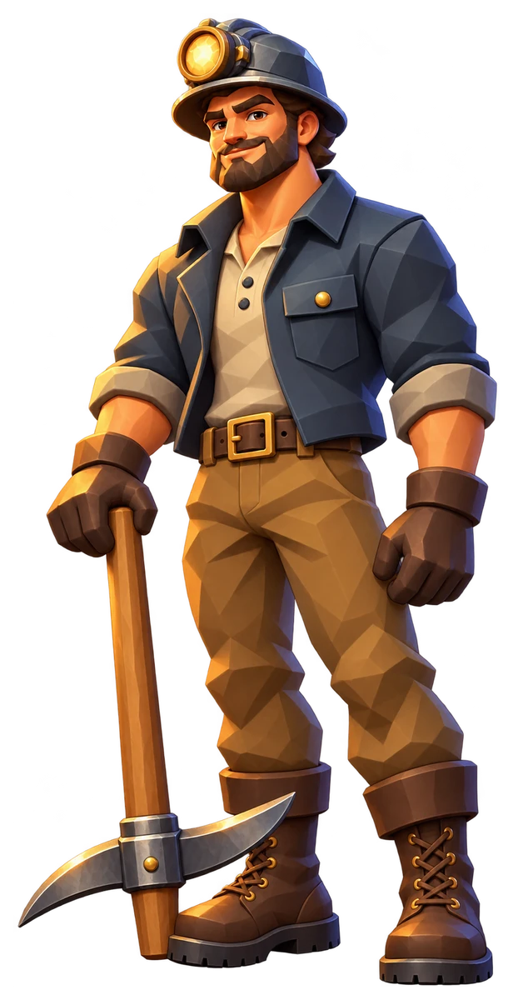
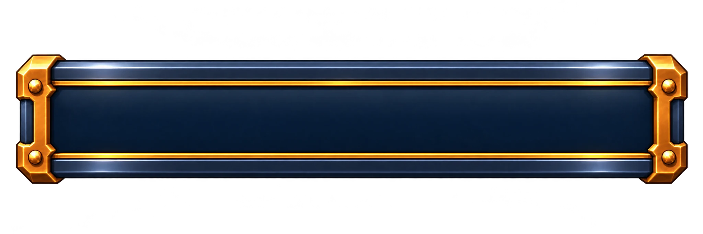
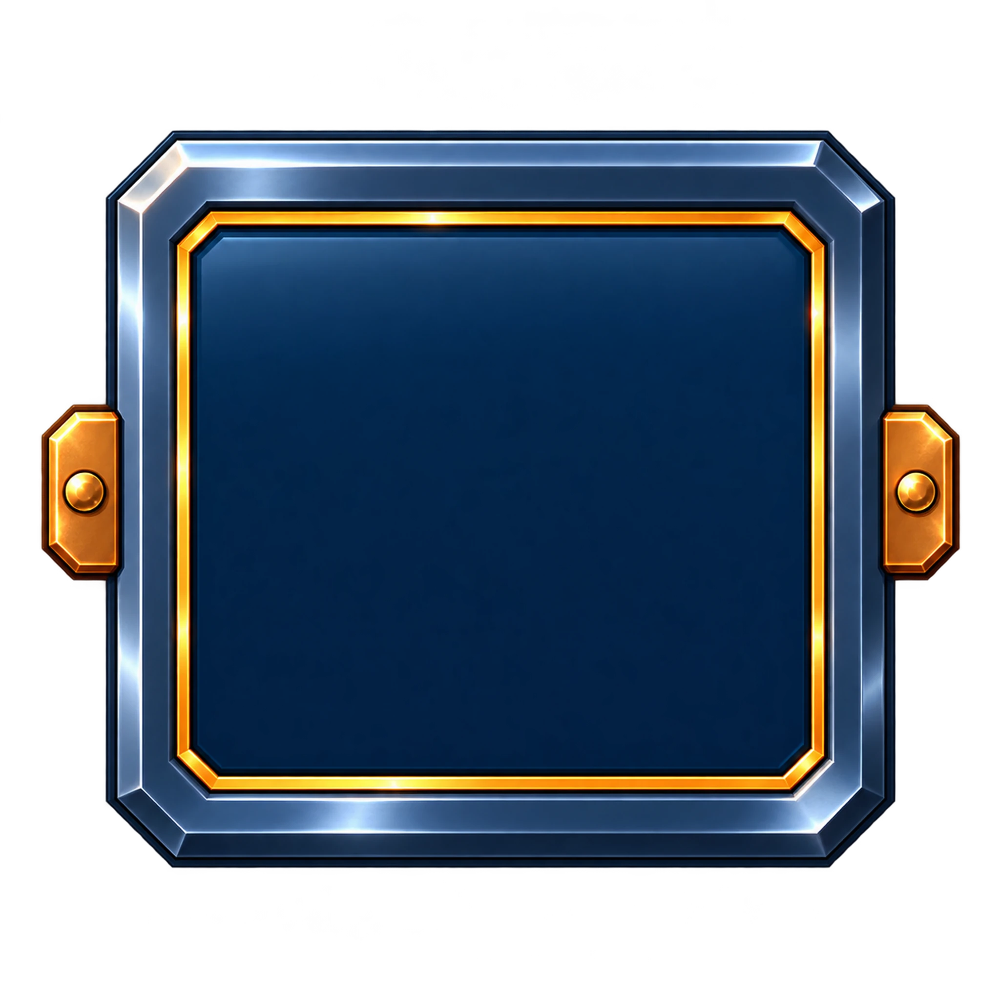
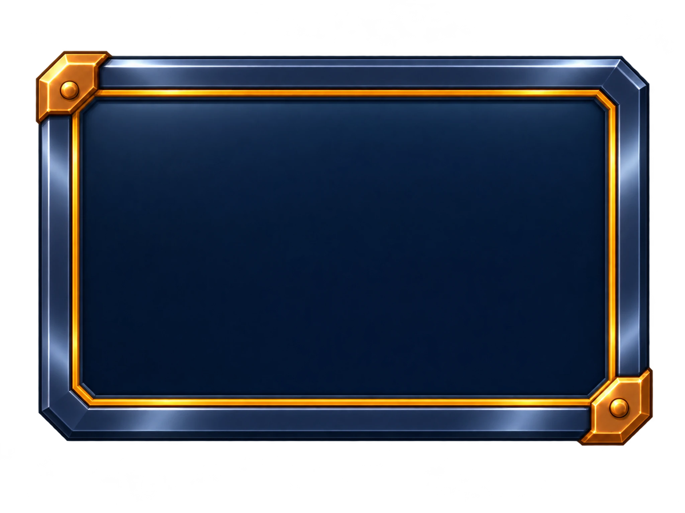
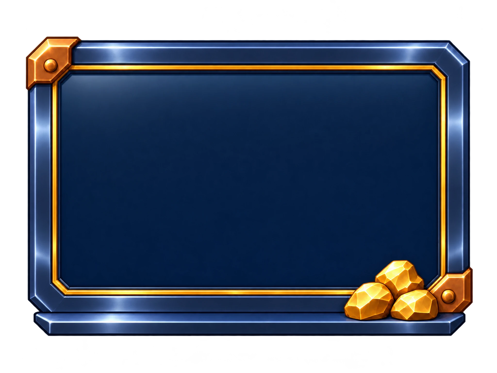
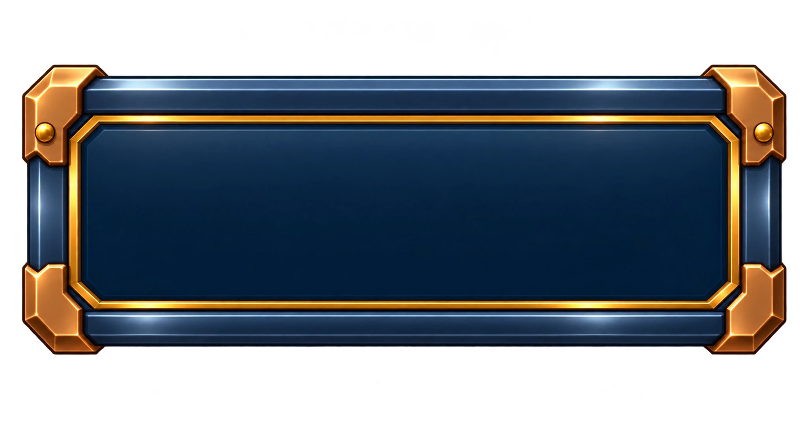
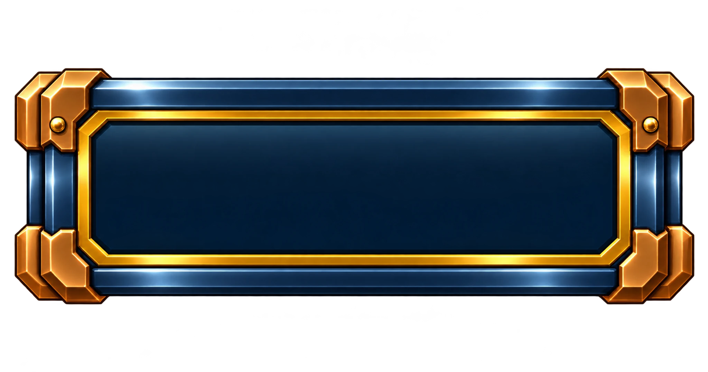
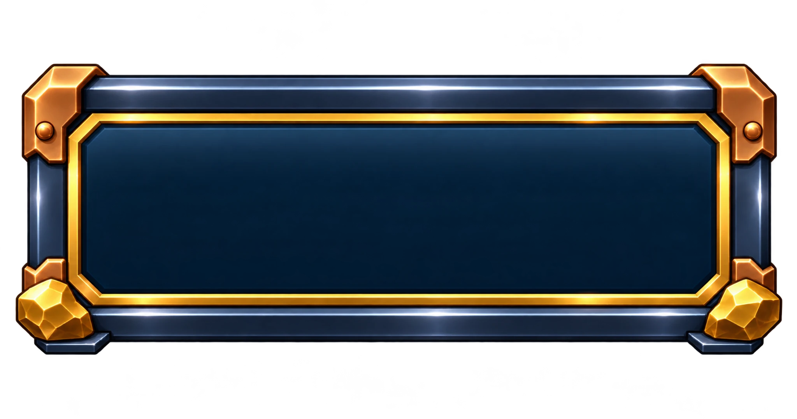
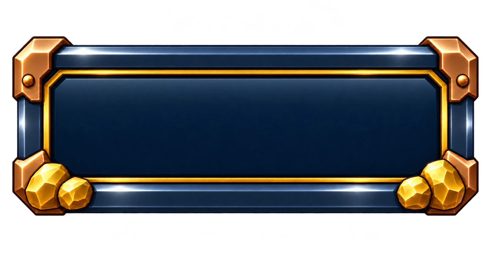
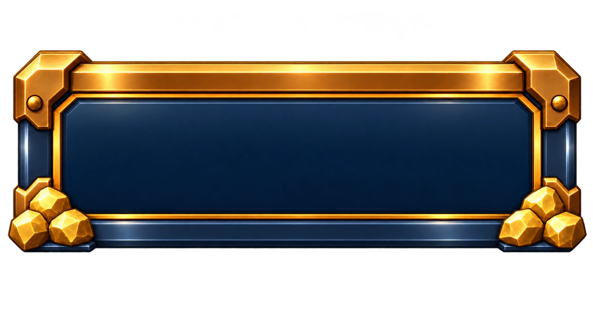
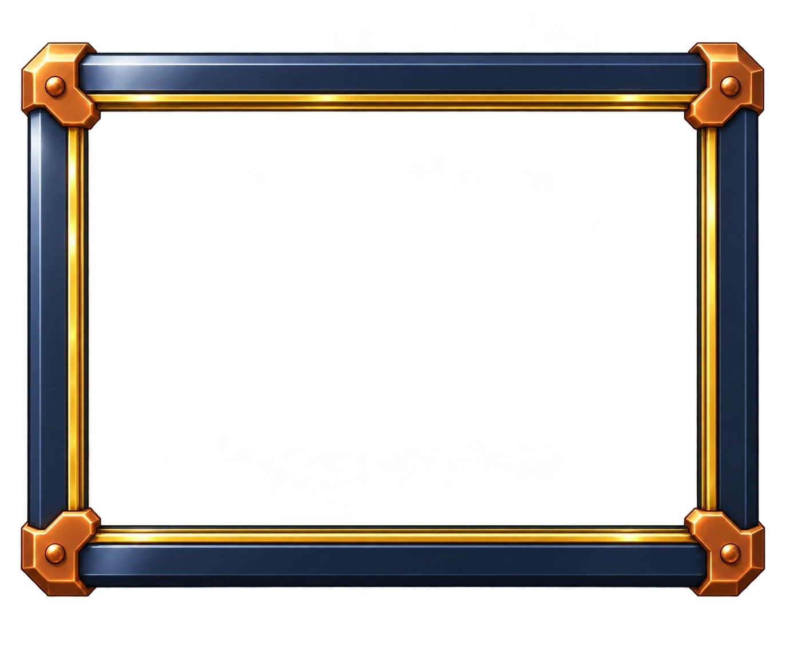